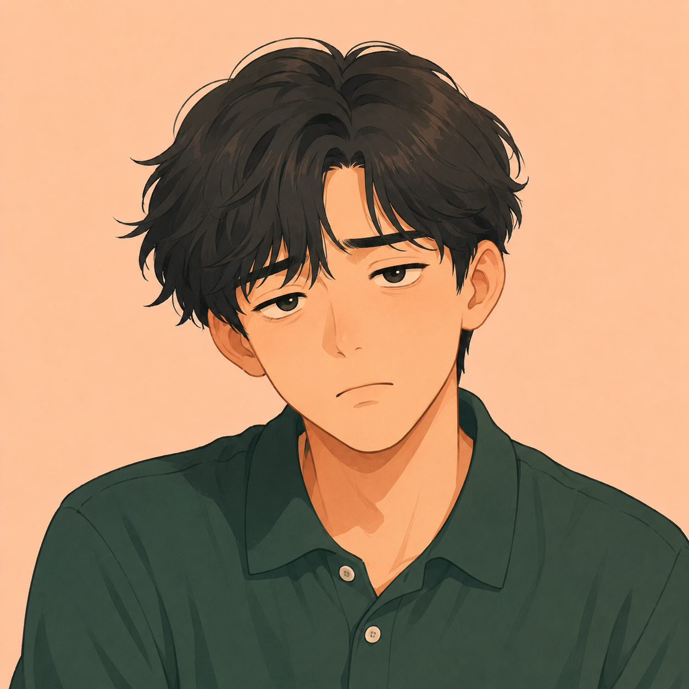

李

小李你的鼻子怎么流血了？快用纸擦擦。
林 小林
小林
我还不习惯北方的气候，估计是天气太干。今天天气不是很冷，你怎么穿这么多？
李
小李
就是因为昨天穿得太少，我都感冒了。
林
小林
最近感冒的人特别多。去看医生了吗？
李
小李
没有，我只是咳嗽，有点儿头疼，不严重，多喝点儿水就好了。
林
小林
春天天气时冷时热，特别容易感冒。这时候一定要多注意保暖，另外，最好经常打开窗户换换空气。
🗨️ 根据课文内容回答问题
① 小林的鼻子为什么流血了？
Gợi ý：因为她还不习惯北方的气候，估计是天气太干，所以鼻子流血了。
② 小李为什么感冒了？他严重吗？
Gợi ý：因为小李昨天穿得太少，所以感冒了；他只是咳嗽，有点儿头疼，不严重，多喝点儿水就好了。
③ 春天为什么容易感冒？应该怎么预防？
Gợi ý：因为春天天气时冷时热，特别容易感冒；应该多注意保暖，经常打开窗户换换空气。
🗣️ 复述
课文1：小林的语气
我还不习惯北方的气候，……
1
鼻子流血·不习惯气候
2
估计是天气太干
3
小李昨天穿得少·感冒了
4
咳嗽头疼·不严重
5
春天时冷时热·注意保暖开窗换气
李
小李
我最近眼睛总是跳，大夫说是因为我长时间看电脑，眼睛太累。
林
小林
长时间坐在电脑前面工作，眼睛很容易累。最好是每过一小时就休息休息，然后再开始工作。
李
小李
医生也这么说，他还告诉我得多向远处看看，尤其是多看看绿色的植物。
林
小林
长时间对着电脑不仅对眼睛不好，身体也会不舒服。研究发现，如果人一天静坐超过6小时，就会影响身体健康。
李
小李
是啊！像咱们这些久坐办公室的人要注意，有时间应该多站起来活动活动。
林
小林
好，咱们午饭后就去附近的公园散步吧。
🗨️ 根据课文内容回答问题
⑦ 小李最近为什么眼睛总是跳？
Gợi ý：因为他长时间看电脑，眼睛太累。
⑧ 长时间对着电脑会有什么影响？
Gợi ý：不仅对眼睛不好，身体也会不舒服；研究发现一天静坐超过6小时就会影响身体健康。
⑨ 小李和小林打算怎样注意身体健康？
Gợi ý：他们打算多站起来活动活动，午饭后去附近的公园散散步。
🗣️ 复述
课文3：小李的语气
我最近眼睛总是跳，……
1
眼睛总是跳·长时间看电脑
2
每小时休息一下
3
多看看绿色植物
4
静坐超过6小时·影响健康
5
多活动·午饭后散步
🏮 文化 · Văn hoá
中国人的养生智慧
Trí tuệ dưỡng sinh của người Trung Quốc
Ảnh cách điệu 2 khung: mùa xuân một người mặc thêm áo khoác nhẹ dù trời đã ấm; mùa thu một người vẫn mặc áo mỏng dù trời se lạnh, phong cách flat illustration tông màu pastel

🌸 春捂秋冻 · Xuân che, thu để lạnh
中国人常说"春捂秋冻"，意思是春天天气刚变暖时不要太快脱掉厚衣服，秋天刚变冷时也不用太快穿上很多衣服，这样身体才能慢慢适应季节的变化，不容易生病。
Người Trung Quốc thường nói "xuân che, thu để lạnh" — mùa xuân mới ấm lên chưa nên vội cởi bớt áo ấm, mùa thu mới se lạnh cũng chưa cần mặc nhiều ngay, để cơ thể từ từ thích nghi với thời tiết, ít bị ốm hơn.
Ảnh một gia đình/người lớn tuổi đi dạo thong thả trong công viên sau bữa tối, cây xanh xung quanh, phong cách flat illustration ấm áp

🚶 饭后百步走，活到九十九 · Ăn xong đi bộ trăm bước
这句话的意思是吃完饭以后散散步，对身体健康很有好处，可以帮助消化，也能让人活得更久、更健康。
Câu này có nghĩa là ăn cơm xong nên đi dạo một chút, rất tốt cho sức khoẻ, giúp tiêu hoá và có thể sống lâu, khoẻ mạnh hơn.
最好的医生是自己——平时多注意生活习惯，比生病了才去看医生更重要。
"Bác sĩ tốt nhất là bản thân" — chú ý thói quen sống hằng ngày quan trọng hơn việc đợi ốm rồi mới đi khám.